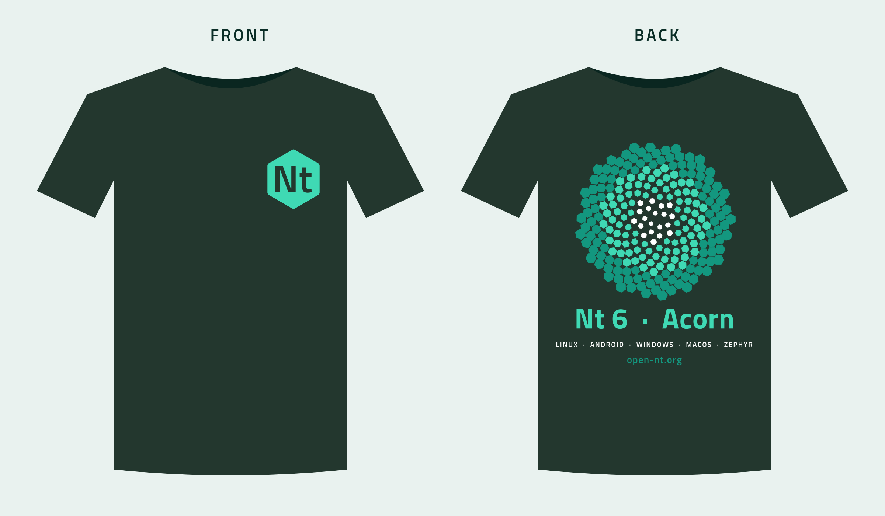
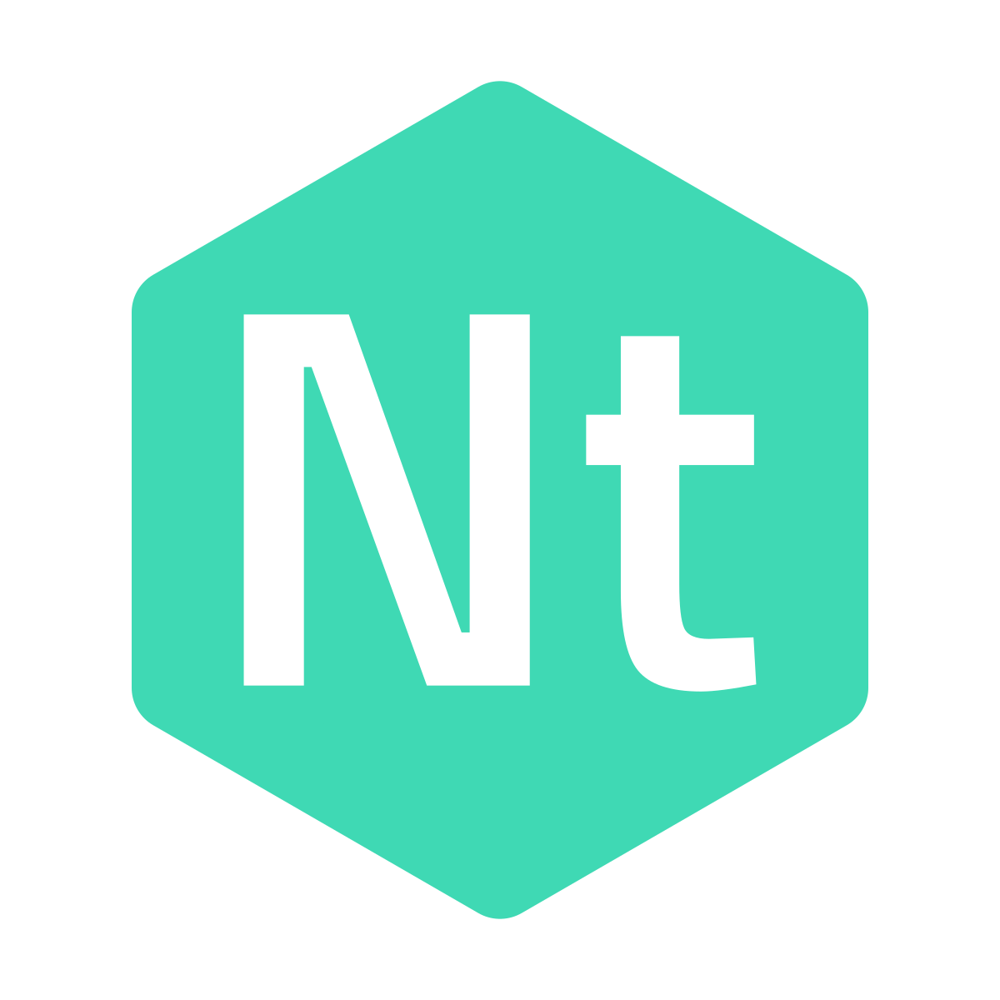
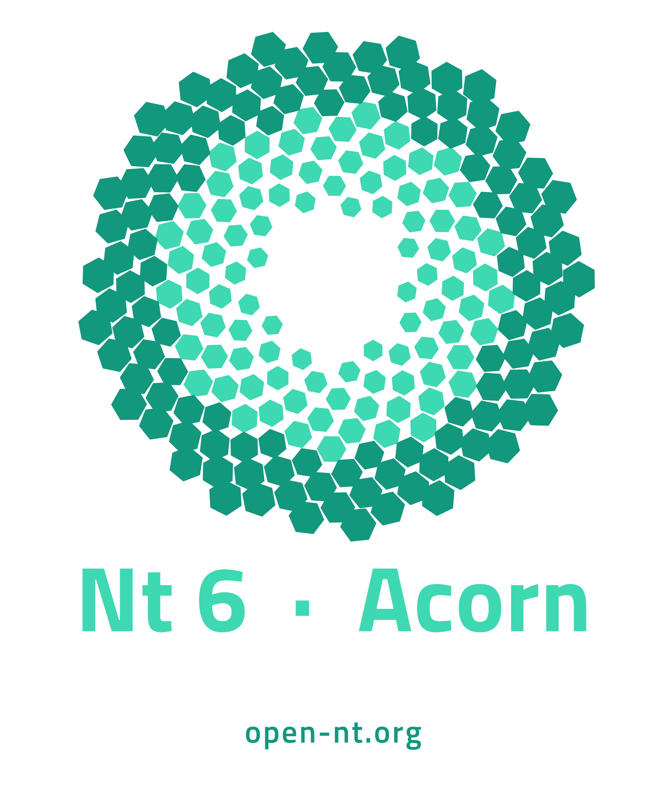

<title>Nt 6 Acorn T-Shirt</title>
<meta name="claude:viewport-fit-sides" content="cover">
<link rel="stylesheet" href="https://fonts.googleapis.com/css2?family=Titillium+Web:wght@400;600;700&family=JetBrains+Mono:wght@400&display=swap">
<style>
/* Layout: one column on pine, the shirt first, then the print spec, then where to order. */
:root{
  --pine:#0B2E27; --deep:#06201B; --line:#1E5A4D; --teal:#13977F; --neon:#3FD9B4; --white:#FFFFFF; --muted:#A6CDC3;
  --display:"Titillium Web",system-ui,sans-serif; --mono:"JetBrains Mono",ui-monospace,monospace;
  color-scheme:dark;
}
body{background:var(--pine);color:var(--white);font:16px/1.6 var(--display);
  padding-left:max(16px,env(safe-area-inset-left,0px));padding-right:max(16px,env(safe-area-inset-right,0px));padding-block:40px 64px}
main{max-width:1040px;margin:0 auto;display:grid;gap:56px}
h1{font-size:clamp(2rem,5vw,3.2rem);font-weight:700;color:var(--neon);margin:0;line-height:1.1;text-wrap:balance}
h2{font-size:1.5rem;font-weight:600;margin:0 0 16px;color:var(--neon)}
p{margin:0;max-width:65ch} .lede{color:var(--muted);margin-top:10px}
.mock{background:#E9F2EF;border-radius:10px;width:100%;display:block}
.prints{display:grid;grid-template-columns:repeat(auto-fit,minmax(240px,1fr));gap:20px}
.prints figure{margin:0;background:var(--deep);border:1px solid var(--line);border-radius:8px;padding:20px;display:grid;gap:12px}
.prints img{width:100%;max-height:420px;object-fit:contain}
figcaption{font-size:.9rem;color:var(--muted)}
.inks{display:flex;flex-wrap:wrap;gap:16px;margin-top:16px}
.ink{display:flex;align-items:center;gap:8px;font-size:.9rem}
.sw{width:22px;height:22px;border-radius:4px;border:1px solid var(--line)}
code{font-family:var(--mono);font-size:.85em;color:var(--neon)}
.spec{display:grid;grid-template-columns:max-content 1fr;gap:6px 24px;margin-top:20px}
.spec dt{color:var(--muted);font-size:.85rem;letter-spacing:.06em;text-transform:uppercase;padding-top:2px}
.spec dd{margin:0;min-width:0}
.vendors{display:grid;gap:14px}
.v{border-top:1px solid var(--line);padding-top:14px;display:grid;grid-template-columns:200px 1fr;gap:6px 24px}
.v h3{margin:0;font-size:1.15rem;font-weight:600}
.v h3 a{color:var(--white);text-decoration-color:var(--teal)} .v h3 a:hover,.v h3 a:focus-visible{color:var(--neon)}
.tag{display:inline-block;font-size:.75rem;letter-spacing:.06em;text-transform:uppercase;color:var(--pine);background:var(--neon);border-radius:3px;padding:0 6px;margin-top:4px}
.tag.alt{background:var(--teal);color:var(--white)}
.v div{min-width:0}
.price{font-variant-numeric:tabular-nums;color:var(--neon);font-weight:600}
.note{color:var(--muted);font-size:.9rem}
a{color:var(--neon)}
@media (max-width:640px){.v{grid-template-columns:1fr}.spec{grid-template-columns:1fr}.spec dt{padding-top:8px}}
</style>
<main>
<header>
  <h1>Nt 6 Acorn T-Shirt</h1>
  <p class="lede">The Nt mark on the chest. The Acorn crown on the back: hexagonal scales on the golden-angle spiral, as on a real acorn cup. Three flat inks on a bottle-green shirt.</p>
</header>



<section>
  <h2>Print files</h2>
  <div class="prints">
    <figure><figcaption><b>Front</b> · left chest, 9–10 cm wide · <code>nt-tee-front.svg</code> / <code>.png</code> (1200 px)</figcaption></figure>
    <figure><figcaption><b>Back</b> · 30 cm wide, top 8 cm below collar · <code>nt-tee-back.svg</code> / <code>.png</code> (4500 × 5400, 15 × 18 in at 300 dpi)</figcaption></figure>
  </div>
  <div class="inks">
    <span class="ink"><span class="sw" style="background:var(--neon)"></span>Nut Neon #3FD9B4</span>
    <span class="ink"><span class="sw" style="background:var(--teal)"></span>Nut Teal #13977F</span>
    <span class="ink"><span class="sw" style="background:var(--white)"></span>White</span>
  </div>
  <dl class="spec">
    <dt>Garment</dt><dd>Dark green, as close to Pine #0B2E27 as the range allows (AS Colour Staple or Classic Organic in their darkest green, Bella+Canvas 3001 in Forest). Black works too.</dd>
    <dt>Background</dt><dd>Transparent. The gaps between scales and the letters in the mark are knock-outs, so the shirt shows through and no pine ink is printed.</dd>
    <dt>Screen print</dt><dd>Back is 3 colours, front is 1. Ask for a white underbase under the neon and teal on a dark shirt.</dd>
    <dt>Source</dt><dd><code>assets/merch/tshirt/make_tshirt.py</code> in the Nt repo regenerates everything. Lettering is outlined Titillium Web, so no fonts are needed at the printer.</dd>
  </dl>
</section>

<section>
  <h2>Where to order, delivered to Australia</h2>
  <div class="vendors">
    <article class="v">
      <div><h3><a href="https://www.printful.com/au/t-shirt-printing">Printful Australia</a></h3><span class="tag">Online shop</span></div>
      <div><p>Print on demand (DTG) with no minimum, priced in AUD. Printful uses partner print facilities in Australia (reported in Brisbane and Melbourne), so a shirt doesn't have to ship from overseas. Connects to a shop so people can buy their own.</p>
      <p class="price">quote in AUD at checkout; confirm the product is made in Australia</p></div>
    </article>
    <article class="v">
      <div><h3><a href="https://stickermule.com/au/products/custom-t-shirts">Sticker Mule AU</a></h3><span class="tag">Sample first</span></div>
      <div><p>No minimum, free shipping, printed in about 4 days. Good for one or two sample shirts to check the neon on dark green. Some Australian buyers have reported the blank shirts as thin.</p>
      <p class="price">about AU$19–25 per shirt delivered; pay in AUD, not USD</p></div>
    </article>
    <article class="v">
      <div><h3><a href="https://www.vistaprint.com.au/clothing-bags/t-shirts/as-colour-classic-organic-t-shirt">Vistaprint AU</a></h3><span class="tag alt">Small batch</span></div>
      <div><p>Screen printing from just 6 shirts on AS Colour blanks, including the Classic Organic tee (220 gsm organic cotton). A good fit for a small team run with a proper 3-colour screen print.</p>
      <p class="price">minimum 6 for screen print; price shown in the online designer</p></div>
    </article>
    <article class="v">
      <div><h3><a href="https://www.theprintbar.com/create/Shirts?c=5241692">The Print Bar</a></h3><span class="tag alt">Made in Australia</span></div>
      <div><p>Prints every order in Australia, from one-offs to bulk. Use it if local production matters more than price.</p>
      <p class="price">quote per job</p></div>
    </article>
    <article class="v">
      <div><h3><a href="https://garmentprinting.com.au/page/brands/as-colour/t-shirts">Garment Printing</a></h3><span class="tag alt">Team run</span></div>
      <div><p>Australian printer for AS Colour blanks with no stated minimum. Screen printing usually becomes cheaper per shirt from around 50. Send the SVGs and ask for a quote with a white underbase.</p>
      <p class="price">quote per job</p></div>
    </article>
  </div>
  <p class="note" style="margin-top:20px">Prices come from vendor pages and buyer reports in November 2026 and change with promotions. Confirm at checkout.</p>
</section>
</main>
